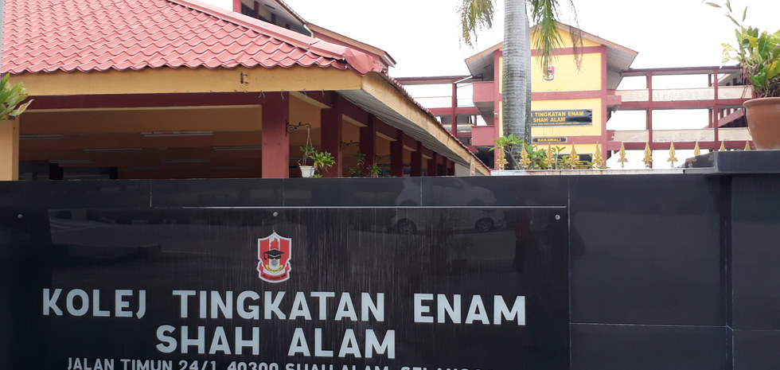

Educational Background
Primary School

I went to Sekolah Kebangsaan Bukit Rimau from 2008 until 2013.
Middle School

Early year of 2014, I enrolled myself into Sekolah Menengah Kebangsaan Batu Sepuluh, Lekir. I was a student there from 2014 until 2015. I changed school from then.

I went to Sekolah Menengah Kebangsaan Jalan Kebun, Klang from 2015 until 2019.
Higher Education
After finishing SPM, I got offered to study in KTESA from 2020 until 2022. It was a long year since Covid-19 was still there affecting students' health, the final semester examination got hold off and Kementerian Pelajaran Malaysia had to change the entire date for the final examination.

In October 2022, I got offered to study in University of Teknologi Mara, Bachelor of Library Management, 2022 until 2026